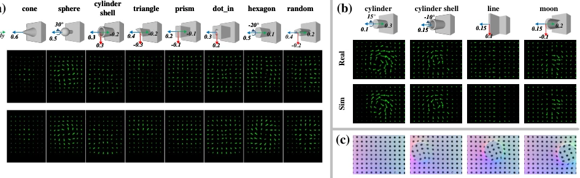
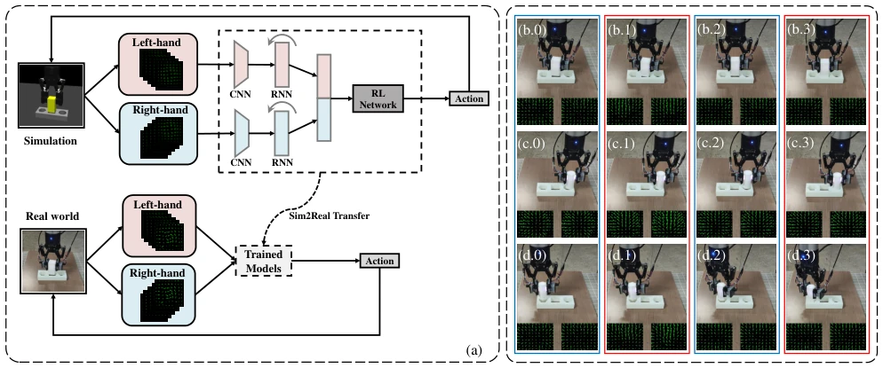

Fig. 1. DIGIT sensor contacted with a spherical indenter. (a) A real-world sensor, (b) A section of the DIGIT sensor, (c) Our tactile simulator connected with MuJoCo.
Fig. 6. (a) The comparison of optical simulation among our method, TACTO [13], Phong [12], and Taxim [14] with the real data. (b) Optical simulation results with different indentation depths and locations. The locations differ over the gelpad surface while the depths differ by 0.2 mm, 0.4 mm, and 0.6 mm, repectively. The MSE error is shown below each pair. (c) Tactile images from GelSight sensors. The calibration data is from the first sensor ”Real1”.

Fig. 7. (a) Marker motion field simulation results of a DIGIT sensor. We visualize the marker motions (scaled up by 5 for better visualization) on the objects from [12] under different normal, shear, and twist loads. (b) Marker simulation of a GelSight sensor whose marker arrangement is different from the DIGIT sensor. (c) shows marker distortion under different loads

Fig. 8. (a) The policy learning framework and Sim2Real learning of tactile-motor peg-in-hole tasks using GelSight sensors with markers. (b-d) The real-world experiment snapshots (including tactile flow images of sensors mounted to the gripper at the bottom of each snapshot) of cuboid, cylinder, and hexagon objects. Blue boxes show insertion pose adjustments, and red boxes show insertion attempts. The tactile flows are scaled up by 5 for better visualization.